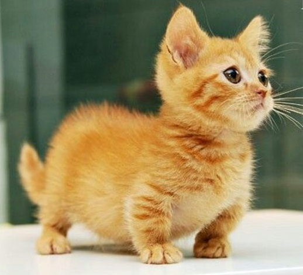

O gato Munchkin é uma raça recente de gatos caracterizada por suas pernas curtas, que são causadas por uma mutação genética. Muita controvérsia surgiu quando a raça foi reconhecida pela The International Cat Association (TICA) em 1995 com críticas demonstrando preocupação a respeito de problemas com a saúde e mobilidade dos animais. O nome "munchkin" é derivado dos pequenos habitantes do País dos Munchkins na obra O Maravilhoso Mágico de Oz do escritor L. Frank Baum.
Está raça é dócil, sociável e amável, se adaptando facilmente com crianças, outros gatos e até cachorros. É ativo como outros gatos, mas não salta tão alto devido à pequena altura das suas pernas. É o único gato no mundo que possui pernas com um terço do tamanho normal e costas longas. O físico pode ser tanto de pelo longo quanto curto, podendo ter várias cores. Eles mantêm-se sobre as patas traseiras, com as dianteiras recolhidas, e sua corrida é semelhante a de um furão pois ele tem a capacidade de fazer “curvas fechadas”, o que faz com que eles sejam muito velozes. É comum vê-lo apoiado sobre as patas de trás como um hamster. É bastante indicado para a vida em apartamento.
Apesar da condição que causa a característica de pernas curtas no Munchkin ser associada a acondroplasia, estes gatos não apresentam crescimento anormal do crânio, característica da acondroplasia. Inicialmente a ideia de que este gato apresentaria problemas de saúde na coluna, quadril e pernas era comum, mas após algum tempo, criadores levaram seus munchkins mais velhos para realizarem exames de raios-x, mas nenhum problema de saúde foi identificado. As únicas condições que aparentemente possuem mais chance de se manifestarem em munchkins é a lordose (curvatura da espinha) e pectus excavatum (cavidade vazia no peito).
Fonte: wikipedia.org
Voltar